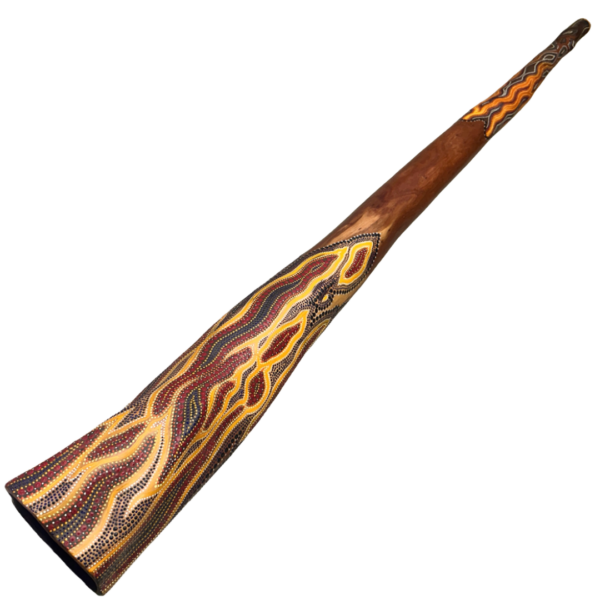

نمونه تصاویر
برخی از مدلهای دیجیریدو میکس مدیا بلک لایت موجود در فروشگاه



ساز تلسکوپی و قابل حمل برای نوازندگان همیشه در سفر. سبک، مقاوم و با کیفیت صدای عالی.
سفارش در واتساپاین ساز برای نوازندگان فعال و علاقهمند به سفر طراحی شده است.
طراحی تلسکوپی و وزن کم برای حمل آسان در سفرهای طولانی.
ساخته شده از مواد با کیفیت برای مقاومت در برابر ضربه و شرایط محیطی.
کیفیت صدای عالی و مناسب برای اجراهای زنده و تمرین.
برخی از مدلهای دیجیریدو میکس مدیا بلک لایت موجود در فروشگاه

بله، مدلهای مسافرتی با طراحی ویژه، صدایی شفاف و قدرتمند ارائه میدهند و برای تمرین و اجرا مناسب هستند.
بله، وزن کم و طراحی تلسکوپی باعث شده حمل و نقل آن بسیار راحت باشد.
از طریق واتساپ یا تماس با پشتیبانی فروشگاه میتوانید سفارش خود را ثبت کنید.
برای دریافت اطلاعات بیشتر یا ثبت سفارش با ما در ارتباط باشید.
ارتباط با پشتیبانی